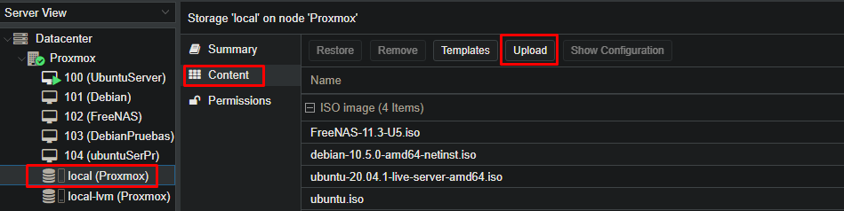

Creación de una maquina virtual en Proxmox.



1
Para realizar las copias de ubuntu, instalaremos FreeNAS dentro de Proxmox. Si no tenemos ninguna iso en el servidor subiremos una desde el ordenador.